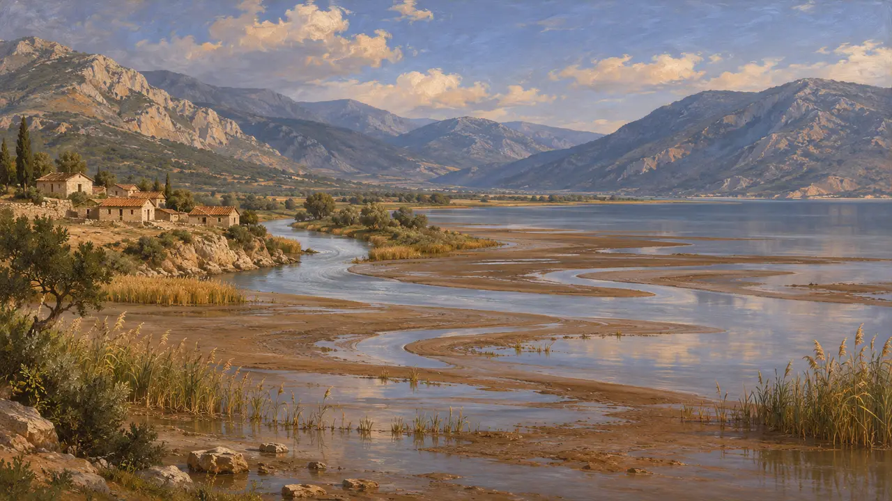
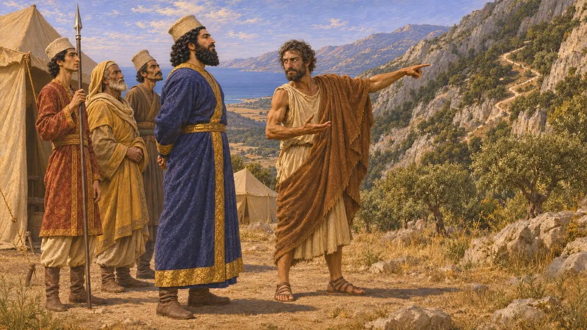
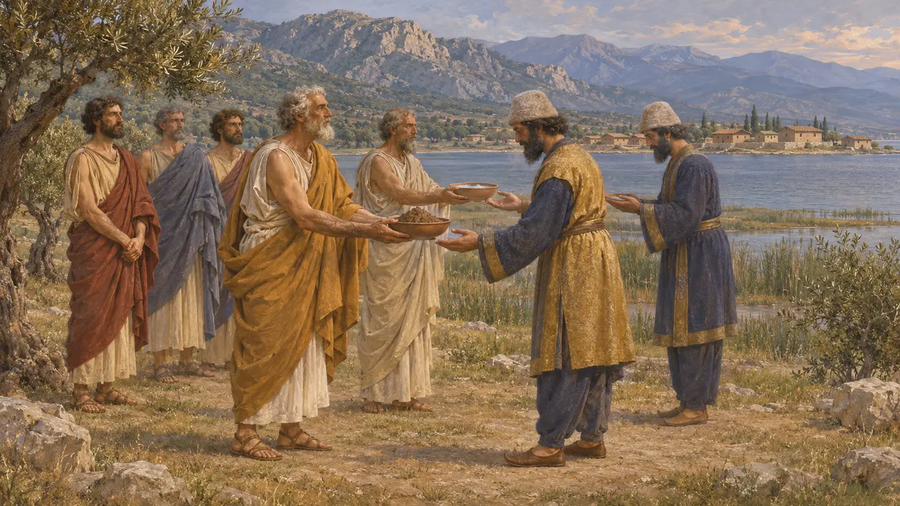
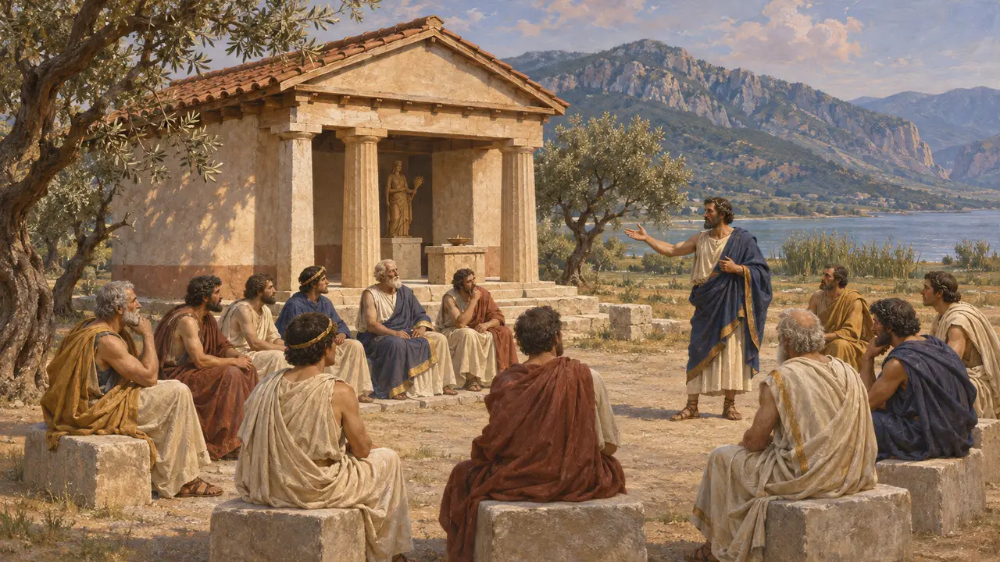

Malis y el golfo Maliaco
La tierra de los malieos en la cabecera del golfo Maliaco, al norte de las Termópilas, 480 a. e. c.
Malis era el pequeño país de los malios, en torno a la cabecera del golfo Maliaco, entre el río Esperqueo y el paso de las Termópilas. Entre sus ciudades estaban Anticira, Traquis y Antela. En 480 a. e. c. el ejército de Jerjes la atravesó para llegar al paso, y un malio, Efialtes, le mostró el sendero a través de la montaña.
En el juego: Malis es la tierra del nivel de las Termópilas. Su golfo, sus pastores y pescadores, y Efialtes de Malis aparecen en las notas del nivel, en las conversaciones y en los informes de campo.

El golfo de mareas
Relato antiguoHeródoto cuenta que Jerjes entró en tierra malia siguiendo un golfo donde el mar sube y baja cada día, cosa que le pareció digna de mención. La primera ciudad desde el norte era Anticira, donde desemboca el Esperqueo, y luego venían los ríos Dira, Melas y Asopo. Hoy la costa del golfo queda a kilómetros mar adentro por el limo del Esperqueo.
Herodotus 7.198-200

Efialtes el maliense
Relato antiguoHeródoto nombra a Efialtes, hijo de Eurídemo, un malio, como el hombre que informó a Jerjes del sendero que cruzaba la montaña, con la esperanza de obtener una gran recompensa. Añade que los anfictiones pusieron después precio a su cabeza y que huyó a Tesalia. Otros nombraron a hombres distintos, y Heródoto dice que expone su propio juicio.
Herodotus 7.213-214

Los malios del lado del Rey
Relato antiguoLos malios dieron tierra y agua a los heraldos de Jerjes junto con los tesalios y otros pueblos del norte. Al año siguiente, en Platea, los malios formaron en la línea de Mardonio entre los griegos del bando del Rey, frente a los atenienses, los plateos y los megarenses.
Herodotus 7.132, 9.31

Antela y los anfictiones
Relato antiguoHeródoto dice que en Antela, cerca del paso, había un templo de Deméter Anfictionis, con asientos para los anfictiones, la liga de pueblos que se reunían allí y en Delfos. El lugar de reunión dio a la pequeña tierra de Malis una parte en los asuntos de toda Grecia.
Herodotus 7.200
Fuentes
- Herodotus 7.132, 7.198-201, 7.213-214, 9.31
- W. K. Pritchett, Studies in Ancient Greek Topography 1, 1965